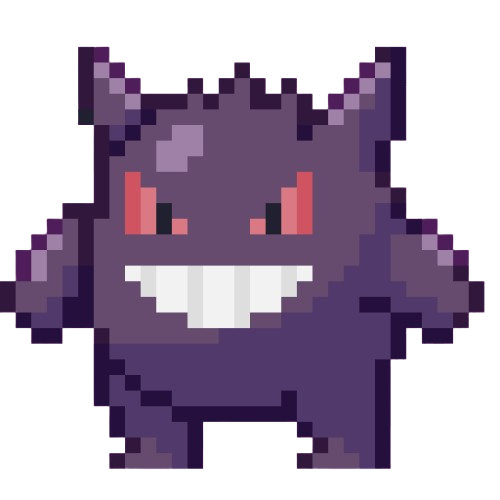

<cv>
Francesco
Developer & Designer — ITT Fermi, Francavilla Fontana
about me
Studente del 5° anno all'ITT Fermi di Francavilla Fontana, appassionato di sviluppo web, design UI/UX e cybersecurity. Cerco sempre il modo per trasformare idee in prodotti digitali che uniscano funzionalità e minimal UI. Appassionato di gaming, motorsport, simracing e mi piace inventare nuove cose.
education
Diploma Tecnico Informatico
settembre 2021 — giugno 2026
ITT Enrico Fermi — Francavilla Fontana (BR)
projects
- OriAntica — sito informativo su storia, leggende e tradizioni di Oria (in dev)
- CTF Web Toolkit — raccolta di tool per web exploitation (2025-2026)
- MovieIndex — catalogo top 19 film dello Studio Ghibli (2025)
- Lumi — AI locale su Raspberry Pi 3b+ con riconoscimento vocale (2025 - in dev)
- Calcolo equazione — Applicazione in .NET 8.0 per calcolare equazioni di 2° grado (2025)
- CManager — Applicazione C# per la gestione dei punti di un GP di F1 (2025)
competitions
- 4th Place — Futuro Challenge - Unisalento (2025)
- 2nd Place — DataBridge - Unisalento (2026)
- PicoCTF March 2026 - Partecipazione con team "flaggony"
- OliCyber 2026 - Partecipazione selezione territoriale (Brindisi)
- 3rd Place — Hackathon "For Web" ITT Enrico Fermi 2023
skills
HTML
CSS
JavaScript
Python
SQL
Linux
Git
Figma
UI/UX Design
Databases
extracurricular
- Sviluppo videogame 2d in stile top-down pixel art (in dev)
- Self-learning Understanding AI - Anthropic Certifications
- Self-learning UI/UX e web development
socials
Linkedin
Github
</cv>